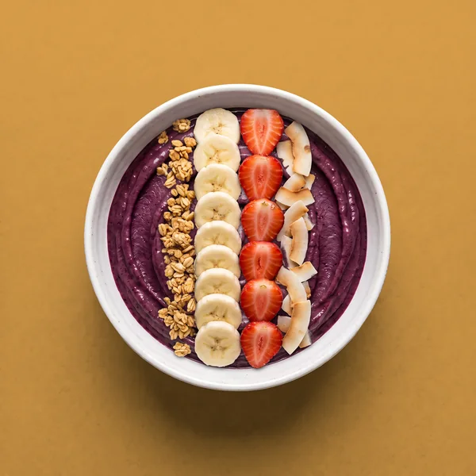
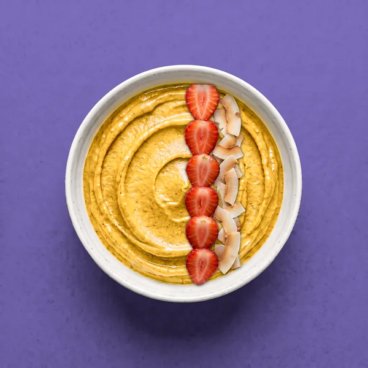
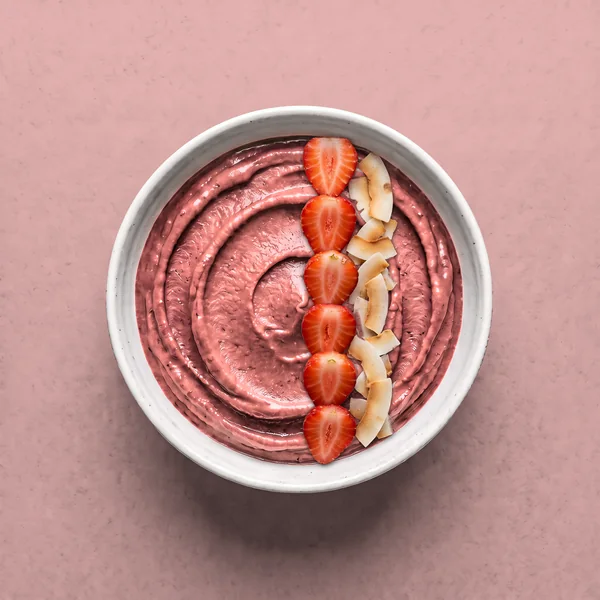
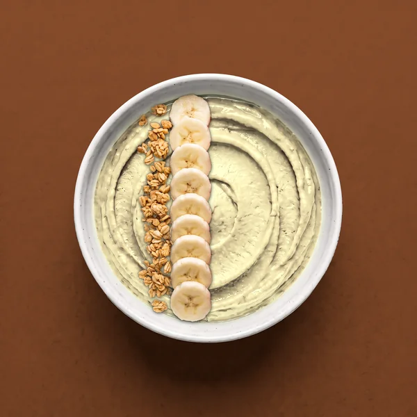

3 min read
How to set up an açaí bowl bar for a party
An açaí bowl bar is the easiest dessert table to run: a few pints of sorbet, four toppings and a scoop. What you need, how much, and how to keep it cold.
A bowl bar is the dessert table that runs itself. Everyone builds their own, nobody needs a blender, and the colors take care of the table. Here is how to set one up for a birthday, a brunch or a team lunch.

The Amazon WorksOrganic Açaí Original Sensation, all four toppings
The Passion Berry IslandPassionfruit with strawberry and coconut
The Rosy Berry IslandPink Guava & Acerola with strawberry and coconut
The Cupuaçu Banana CrunchCupuaçu & Coconut with granola and banana
Serving suggestions; toppings are not included. Tap a bowl to open it in the bowl builder.
What do you need for an açaí bowl bar?
- Sorbet. Two or three flavors look best side by side: a deep purple açaí, a bright fruit and a pink or white one. For example, Organic Açaí Original Sensation, Organic Mango and Dragon Fruit & Pineapple.
- Toppings in small dishes: granola, sliced banana, halved strawberries and coconut flakes. Add one or two extras if you like, such as blueberries or kiwi.
- Bowls and spoons. Small bowls work better than big ones; guests come back for a second flavor.
- A scoop, and a jug of warm water to dip it in.
- Labels for every flavor and every topping, so guests know what they are choosing. That matters if anyone has a food allergy.
How much sorbet do you need?
Plan on one 2/3-cup scoop per bowl. That is the serving size on our pint, and a 16.9 fl oz pint gives about three bowls. For 12 guests, four pints is about one bowl each; six leaves room for seconds. Grab'n Go cups work too: one 250 mL cup is one serving, with a wooden spoon included.
How do you keep the sorbet cold?
- Keep the pints in the freezer until you serve, and take them out one at a time.
- Set the open pint in a bowl of ice while it is on the table.
- Let one person scoop. The line moves faster, and the pints go back in the freezer sooner.
- Store the sorbet at 0 °F (−18 °C) or below, and do not refreeze sorbet that has melted.
How should you lay out the bar?
In the order people build a bowl: bowls first, then the sorbet, then the fruit, then granola and coconut, with spoons and napkins at the end. Put the toppings in a line rather than a cluster, so the line keeps moving.
How do you make it fun?
- Name the bowls. In our bowl builder every bowl gets a name: The Mango Berry Crunch, The Rosy Berry Island, The Amazon Works. Print a few as a menu, or let guests invent their own.
- Let guests find their flavor. Our four-tap quiz picks a flavor from a color, a taste, a moment and a topping. Pass a phone around the table.
- Go for color. The sorbets run from deep purple to gold, hot pink and white. A purple, a gold and a pink bowl side by side do all the decorating.
Can kids build their own bowls?
Yes. Slice the fruit ahead of time, use small bowls, and let them choose two toppings at a time. The bowl builder makes a good warm-up: they can try every combination before the real thing.
Related: Açaí bowl toppings · An açaí bowl without a blender · Serving ideas
Austropical açaí and tropical fruit sorbets come to US freezers in March 2027. The first container carries Organic Açaí Original Sensation and Organic Mango; the rest of the range follows.
Serving suggestions; toppings are not included. Açaí Zero Sugar: Not a low calorie food. Product of Brazil.